Forestry. Part 4
Description
This section is from the book "The Book Of Woodcraft", by Ernest Thompson Seton. Also available from Amazon: The Book of Woodcraft.
Forestry. Part 4
Osage Orange, Bois D'Arc, Bodarc Or Bow Wood (Toxylon Pomijerum)
A small tree, rarely 60 feet high. Originally from the middle Mississippi Valley, now widely introduced as a hedge tree. Famous for supplying the best bows in America east of the Rockies. Wood is bright orange; very hard, elastic, enduring and heavy. Leaves 3 to 6 inches long. A cubic foot weighs 48 lbs.
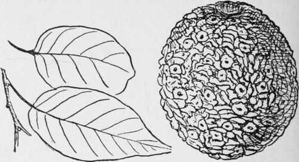Osage Orange.
Tulip Tree, White Wood, Canoe Wood Or Yellow Poplar (Liriodendron Tulipifera)
One of the noblest forest trees, ordinarily 100 feet, and sometimes 150 feet high. Noted for its splendid clean straight column; readily known by leaf, 3 to 6 inches long, and its tulip-like flower. Wood soft, straight-grained, brittle, yellow, and very light; much used where a broad sheet easily worked is needed but will not stand exposure to the weather; is poor fuel; a dry cubic foot weighs 26 lbs. Mississippi to Atlantic, L. Ontario to Gulf.
Sassafras, Ague Tree (Sassafras Sassafras)
Usually a small tree of dry sandy soil, but reaching 125 feet high in favorable regions. Its wood is dull orange, soft, weak, coarse, brittle, and light. A cubic foot weighs 31 lbs. Very durable next the ground. Leaves 4 to 7 inches long. Maine to Iowa and Texas to Atlantic.
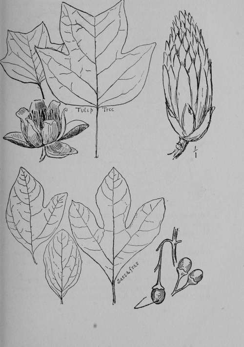Sweet Gum, Star Leaved Or Red Gum, Bilsted, Alligator Tree Or Liquidambar (Liquidambar Styraciflua)
A tall tree up to 150 feet high of low, moist woods, remarkable for the corky ridges on its bark, and the unsplit-able nature, of its weak, warping, perishable timber.
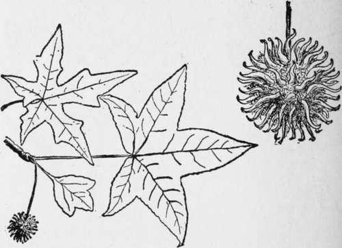Heart-wood reddish brown, sap white; heavy, weighing 37 lbs. to cubic foot. Leaves 3 to 5 inches long. Mass. to Mo. and south to Gulf.
Sycamore, Plane Tree, Buttonball Or Buttonwood (Platanus Occidentalis)
One of the largest of our trees; up to 140 feet high; commonly hollow. Wood, light brownish, weak; hard to split; heavy for its strength. A cubic foot weighs 35 lbs. Little use for weather work. Famous for shedding its bark as well as its leaves. Leaves 4 to 9 inches long. Canada to the Gulf.
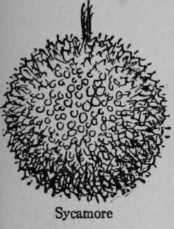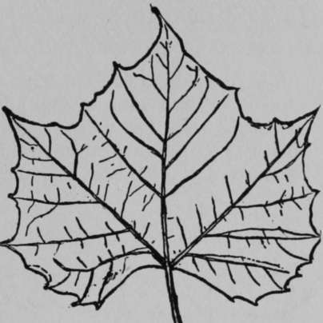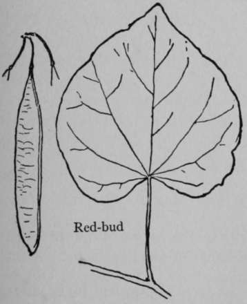Red Bud Or Judas Tree (Cercis Canadensis)
Small tree of bottom lands, rarely 50 feet high; so called from its abundant spring crop of tiny rosy blossoms, coming before the leaves, the latter 2 to 6 inches broad. "Judas tree" because it blushed when Judas hanged himself on it (Keeler.) Its wood is dark, coarse and heavy.
A cubic foot weighs 40 lbs. Md. to Iowa and southward.
Sugar Maple, Rock Maple Or Hard Maple (Acer Saccharum)
A large, splendid forest tree, 80 to 120 feet high; red in autumn. Wood hard, strong, tough and heavy but not durable. A cubic foot weighs 43 lbs. It enjoys with Beech, Hickory, etc., the sad distinction of being a perfect firewood. Thanks to this it has been exterminated in some regions.
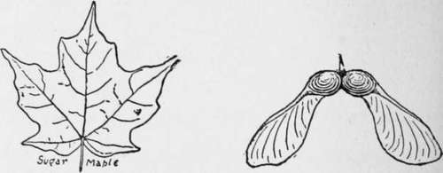Bird's-eye and curled Maple are freaks of the grain. Leaves 3 to 5 inches long. Its sap produces the famous maple sugar. Man. to Nova Scotia and south to Gulf.
Silver Maple, White Or Soft Maple (Acer Saccharinum)
Usually a little smaller than the Sugar Maple and much inferior as timber. Wood hard, close-grained. A cubic foot weighs 33 lbs. Leaves 5 to 7 inches long. This tree produces a little sugar. It is noted for its yellow foliage in autumn. Nova Scotia to Minn, and south to Okla. and Ga.
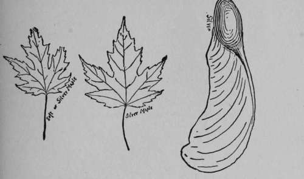Red, Scarlet, Water Or Swamp Maple (Acer Rubrum)
A fine tree the same size as the preceding. Noted for its flaming crimson foliage in fall, as well as its red leafstalks, flowers and fruit earlier. Its wood is light-colored, tinged reddish, close-grained, smooth with varieties of grain, as in Sugar Maple; heavy. A cubic foot weighs 39 lbs. Leaves 2 to 6 inches long. Que. to Minn, and So. to Gulf.
Box Elder Or Ash Leaved Maple (Acer Negundo)
A small tree, 40 to 50 up to 70 feet high, found chiefly along streams. Wood pale, soft, close-grained, light. A cubic foot weighs 27 lbs. Poor fuel. Makes paper-pulp. Leaflets 2 to 4 inches long. Mass. to Br. Col. south to Mex. and Ala.
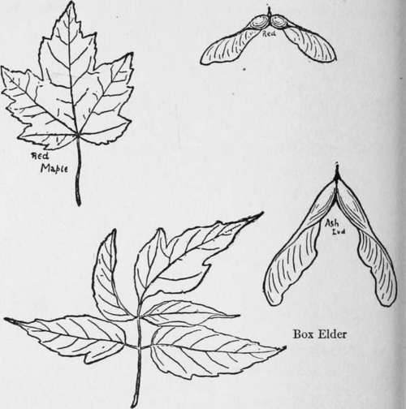Basswood, White-Wood, Whistle Wood, Lime Or Linden (Tilia Americana)
A tall forest tree 60 to 125 feet; usually hollow when old. Wood soft, straight-grained, weak, white, very light. A cubic foot weighs 28 lbs. It makes a good dugout canoe or sap trough. The hollow trunk, split in halves, was often used for roofing (see log-cabin). Poor firewood, and soon rots, makes good rubbing-sticks for friction fire. Its inner bark supplies coarse cordage and matting. Its buds are often eaten as emergency food. Leaves 2 to 5 inches wide. Man. to Nova Scotia and south to Texas.
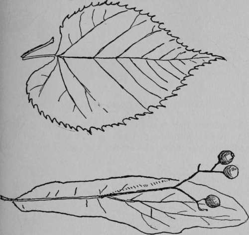Sour Gum, Black Gum, Pepperidge Or Tupelo (Nyssa Sylvatica)
A forest tree up to 100 feet high; in wet lands. Wood pale, very strong, tough, unsplittable and heavy. A cubic foot weighs 40 lbs. Used for turner work, but soon rots next the ground. Leaves 2 to 5 inches long. Mass. to Wis. and south to Gulf.
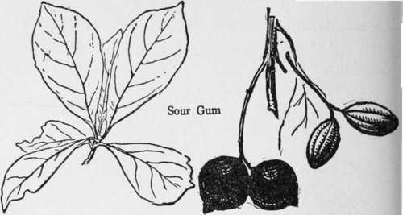White Ash (Fraxinus Americana)
A fine forest tree on moist soil: 70 to 90 or even 130 feet high. Wood pale brown, tough, and elastic. Used for handles, springs, bows, also arrows and spears; heavy. A cubic foot weighs 41 lbs. Soon rots next the ground. Called white for the silvery under sides of the leaves; these are 8 to 12 inches long; each leaflet 3 to 5 inches long. Miss. Valley and east to Atlantic.
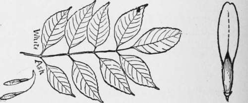Black Ash, Hoop Ash Or Water Ash (Fraxinus Nigra)
A tall forest tree of swampy places; 70, 80, or rarely 100 feet high. Wood dark brown, tough, soft, coarse, heavy. A cubic foot weighs 39 lbs. Soon rots next to the ground.
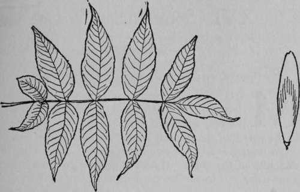Late in the spring to leaf, and early to shed in the fall. The leaves are 12 to 16 inches long; its leaflets except the last have no stalk, they number 7 to 11, are 2 to 6 inches long. Nova Scotia to Man. and south to Va.
Recommended
"The Forester's Manual," or Forest trees of Eastern North America, a fully illustrated Manual with map showing range of each species. By Ernest Thompson Seton, published by Doubleday, Page & Co., net, 50c. and net, $1, according to binding.
"Our Native Trees," By Harriet L. Keeler, 1900. Charles Scribner's Sons, New York City. Price, $2.
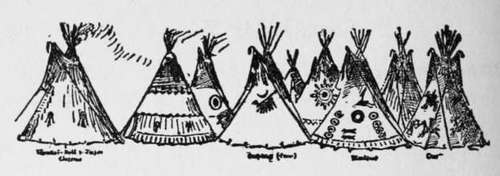
Continue to:
Tags
bookdome.com, books, online, free, old, antique, new, read, browse, download